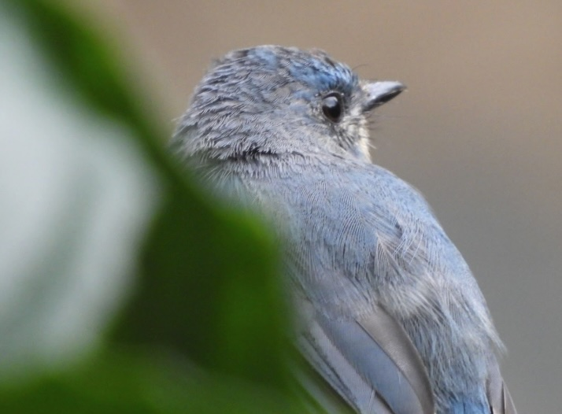

BEST OF THE NILGIRIS, CAMERA NIKON P1100
Crimson-backed Sunbird
One of the smallest sunbirds in the world at just 8 cm, is a dazzling jewel of Nilgiris. The male’s plumage glitters in shifting shades of crimson, purple, and green, while the female’s muted colors provide camouflage. Known for their rapid, high-pitched ‘chit-chit’ calls, these birds flit restlessly among flowers, sipping nectar and occasionally hovering like tiny hummingbirds.
Brugmansia
Commonly called Angel’s Trumpet, known for its large, pendulous, trumpet-shaped flowers that are especially fragrant at night; Brugmansias are highly toxic if ingested since all parts contain tropane alkaloids like scopolamine and atropine, so while handling is usually safe, hands should be washed after contact.

Long Tailed Shrike (Lanius schach)
Upon the tree the shrike stands still,
Alone, yet crowned with a quiet will.
No song it seeks, no crowd, no call—
It is complete in its silence, all.
Tickell's Blue Flycatcher
This species is common in the Nilgiris, with males showing a bright blue head and back and orange-yellow underparts. It is a small, insectivorous bird often found in wooded areas and garden edges
Nilgiri Verditer Flycatcher
The Nilgiri Flycatcher (Eumyias albicaudatus), sometimes called the Nilgiri Verditer Flycatcher due to its resemblance to the Verditer Flycatcher, is a small bird endemic to the southern Western Ghats, particularly the Nilgiri Hills. Measuring about 13 centimeters in length, this flycatcher displays a striking dark steely indigo-blue plumage with hints of violet-blue on the forehead and darker lores.
Purple Sunbird (Cinnyris asiaticus)
This is a tiny, energetic nectar-feeding bird. Males in breeding plumage appear a striking metallic purple-black, while females are olive-brown above with yellowish underparts. They have slender, curved bills adapted for sipping nectar but also eat insects, especially when feeding chicks. Agile and fast-flying, they are often seen flitting among flowering trees and shrubs, playing a vital role in pollination. Their rapid movements and sweet, chirping calls make them a lively presence in gardens and forests alike.

Black-naped Monarch (Hypothymis azurea)
Also called the Black-naped Blue Flycatcher, is a graceful, insect-eating passerine bird found across South and Southeast Asia. Males are striking with their bright blue plumage, pale underparts, and a distinctive black patch on the nape, while females are duller bluish-grey without the bold nape mark. They are active flycatchers, often seen darting from perches to snatch insects mid-air or gleaning them from foliage. Their melodious, whistling calls make them easy to detect in forests, gardens, and wooded areas. They usually build neat cup-shaped nests, suspended from low branches, where both parents share in rearing the chicks.
The Red-whiskered Bulbul (Pycnonotus jocosus)
This is a tiny, energetic nectar-feeding bird. Males in breeding plumage appear a striking metallic purple-black, while A striking songbird easily recognized by its black crest, white cheeks, and the bright red “whisker” patches below its eyes.
Cuckoo Wasp
The cuckoo wasp, belonging to the family Chrysididae, is a fascinating insect known for its brilliant metallic colors, often shimmering in shades of blue, green, or gold. These wasps are kleptoparasitic, meaning they lay their eggs in the nests of other solitary bees or wasps. When the cuckoo wasp larva hatches, it consumes the host’s eggs or larvae, as well as the provisions stored in the nest. Despite their striking appearance and aggressive reproductive strategy, cuckoo wasps are generally harmless to humans, rarely stinging unless provoked. Their behavior and vivid exoskeleton make them a remarkable example of nature’s diversity and evolutionary ingenuity. patches below its eyes.